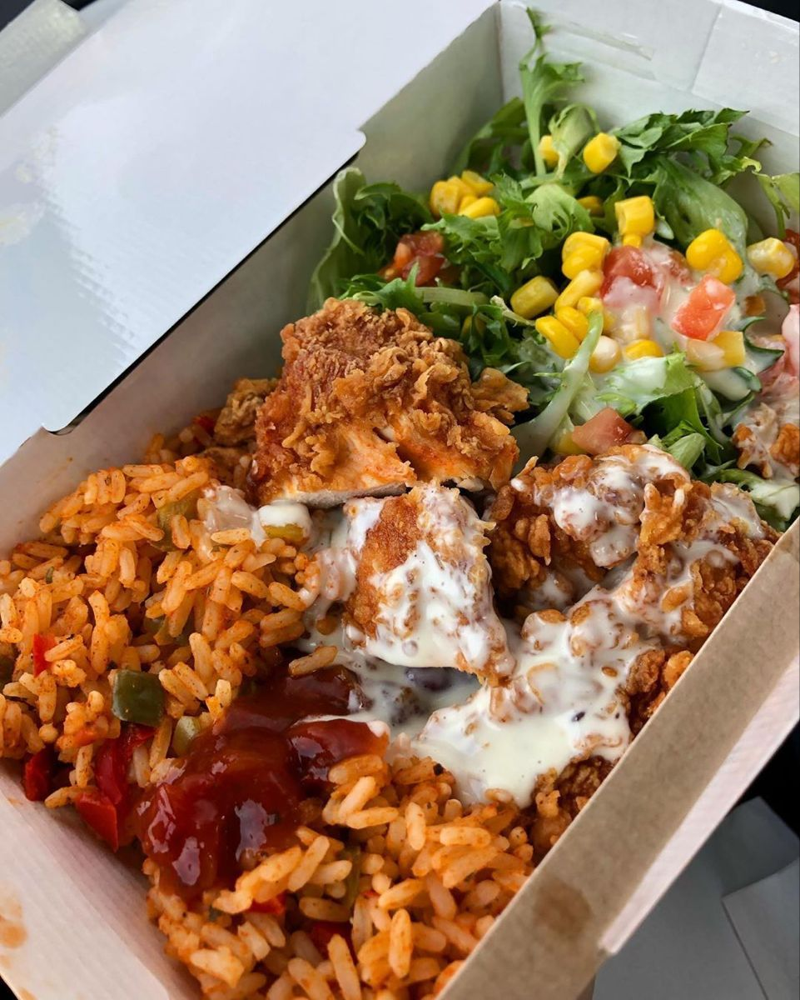

KFC Ricebox Fakeaway

This KFC ricebox fakeaway is a homemade version of the popular fast-food meal, featuring crispy chicken and seasoned rice. It’s perfect for when you're craving comfort food with a flavorful twist, but want to make it yourself.
You can customize the ricebox by adding your favorite vegetables or adjusting the seasoning to suit your taste. It’s an easy and satisfying meal that brings the flavors of KFC right to your home.
Ingredients
For the chicken
- 2 chicken breasts (or thighs)
- 1 cup plain flour
- 1 tsp paprika
- 1 tsp garlic powder
- 1 tsp onion powder
- 1/2 tsp salt
- 1/2 tsp black pepper
- 1 egg (beaten)
- 1 tbsp milk
- vegetable oil (for frying)
For the rice
- 1 cup basmati rice
- 2 cups chicken broth (or water)
- 1 tbsp butter (optional)
- Salt, to taste
For the sauce
- 2 tbsp mayonnaise
- 1 tbsp ketchup
- 1 tbsp BBQ sauce
- 1 tsp mustard (optional)
Extras
- Fresh parsley
- vegetables for a salad
Instructions
- Prepare the chicken: In a bowl, mix the flour, paprika, garlic powder, onion powder, salt, and pepper.
- Coat the chicken: Dip the chicken in the beaten egg mixed with milk, then coat evenly with the flour mixture.
- Fry the chicken: Heat vegetable oil in a pan over medium heat. Fry the chicken pieces for 6-8 minutes until golden and crispy. Remove and set aside.
- Cook the rice: Rinse the rice under cold water. In a pot, bring chicken broth (or water) to a boil. Add the rice and a pinch of salt, then reduce heat. Cover and simmer for 10-12 minutes, or until cooked. Fluff with a fork.
- Make the sauce: In a small bowl, mix together mayonnaise, ketchup, BBQ sauce, and mustard (optional).
- Assemble the ricebox: Place the cooked rice in a bowl, top with crispy chicken, drizzle with sauce, and garnish with parsley. Add any optional veggies if desired.